客户、事务所和审计师的匹配
概述
本章描述客户、事务所和 A1 审计师如何配对，以及这种配对的稳定性与时间变化。匹配结构为理解客户筛选和固定效应识别提供背景；现有分组、热图和保留率均不能解释为服务的因果影响。
核心结果
客户—事务所关系比客户—签字审计师关系更稳定，配对数量呈明显右偏。 累计 A1 图使用 71,584 条主面板记录中匹配到 A1 的 70,476 条，涉及 6,159 个 A1 ID；每个 A1 等权，不是年度工作量。年度保留率另来自 1990—2023 年的清洗谱系和签字团队口径，不能混用分母。
统计口径。 累计客户数为每位 A1 对应的不同客户 ID 数，累计报告数为其客户—年度记录数；年度配对保留率为
\[ R_t^{\,s}=\frac{\#\{\text{eligible type-}s\text{ links retained in }t+1\}} {\#\{\text{eligible type-}s\text{ links in }t\}}. \]
\(s\) 分别表示客户—事务所、客户—签字审计师、事务所—签字审计师，以及按当期 A1/A2 分角色定义的配对；A1/A2 保留表示该人次年仍在签字团队中，不要求继续担任相同位次。公司关系使用相邻年度有效转换样本；事务所—审计师关系使用当期审计师主事务所记录，次年未观察到者计为未保留。分母分别遵循这些可比口径，不是全市场所有记录。后文另说明机构谱系清洗和年度覆盖。
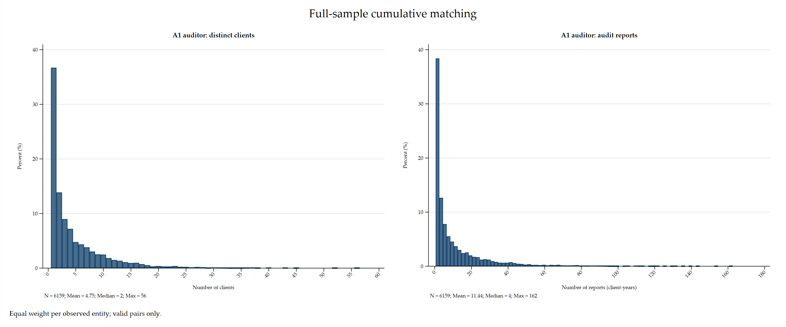
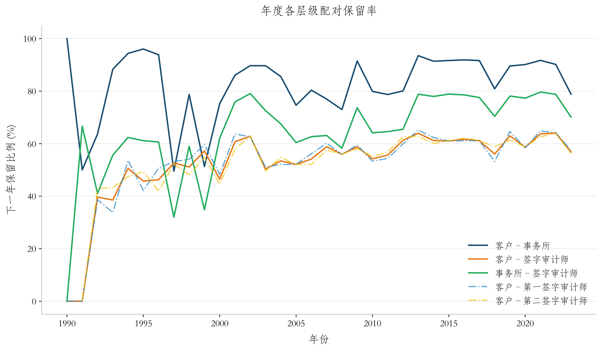
累计匹配全部六项统计 · 配对稳定性完整分析 · 匹配模型与识别诊断
统计与回归设定。 第 1 节累计配对和第 6 节保留率为描述统计，不适用回归控制、FE 或标准误；其主体、分母和缺失处理分别列示。当前 44_triadic_sorting_blm.do 的热图实际吸收“配对类型”和“年份”两个 FE，而不是二者的交互；方程中的 \(\eta_{kl}+\lambda_t\) 与命令一致。代码控制 size、roa、lev，按客户聚类。历史图与当前脚本的版本一致性、估计年份和 N 尚待核验，因此仍按旧版描述诊断展示。五年滚动秩回归没有额外控制或 FE，使用 OLS 常规标准误；它不是严格的 Spearman 统计量。AKM 有限流动诊断的样本门槛、归一化和各图有效 N 须与对应输出继续核对，不能从主 AKM 章直接移植。
1. 本页结论与证据边界
本页把客户、事务所和签字审计师之间的 sorting（排序匹配） 集中在同一处。现有证据表明：客户风险、事务所梯队和签字审计师并不是随机配对；高风险客户所聘事务所的构成在样本期内发生了明显变化，本土八大的份额扩张尤其显著。但这些结果描述的是匹配的联合分布与其时间变化，不是“某一类事务所导致客户风险上升或下降”的因果估计。
回归／统计设定。 累计配对以主体等权，A1 使用稳定 ID；6,159 个 A1、5,729 家客户、299 家事务所的分母不同。不是回归，不适用控制、FE 或标准误。 变量与回归设定。
本页分开呈现三类工作：
- 已运行的匹配稳定性与事务所—客户 AKM 诊断（2026 年 9 月输出）；
- 已运行的启发式、PCA 与收费分布聚类图（2026 年 8 月输出）；
- 尚待统一样本、重新运行并形成正式主结果的三方 BLM / matching 规格。
后两类图在这一阶段应作为描述性证据和模型诊断，而不是审计质量的处理效应。特别是，现有 44_triadic_sorting_blm.do 中的“BLM 排名”先按审计费用分布聚类、再按同一结果变量的样本内失败率定向；因此它不是独立于审计失败的质量检验。
1.1 全样本累计匹配数量分布
本节补充六项累计匹配数量分布：每位 A1 审计师服务的不同客户数和签署的报告数、每家客户聘用的不同事务所数和 A1 审计师数，以及每家事务所服务的不同客户数和在其报告中出现的不同 A1 审计师数。统计覆盖主面板中可识别的配对，不限定于后续回归或 AKM 的估计样本；每张图按其主体等权计算百分比。
统计口径。 客户按 stock_code 识别，事务所按 dom_firm_id 识别，未合并事务所谱系。本节涉及审计师的四项分布均只考虑 A1，按证券代码—年度合并 auditor_team_features.dta 中的 a1_auditor_id，不纳入 A2。该字段为项目统一稳定 ID，包含 pid_、cert_ 和 name_ 后备标识，并非全部为注册证书号；本脚本不额外按姓名合并。缺失 A1 ID 的记录只从涉及审计师的统计中排除，客户—事务所统计保留原样本。报告定义为唯一的“客户—年度”记录，不区分同一年度的报告版本。全样本累计客户数对客户去重，报告数则累计不同客户—年度，因此连续多年服务同一客户会增加报告数。
每项统计只使用两端标识均有效的配对，缺失标识不作为一个主体，也不视作零匹配。不同图的有效样本可能不同。累计数量受主体在样本中被观测的年限影响，不能直接解释为年度业务负荷、匹配偏好或因果效应。CSV 保留未分箱的原始数量与精确频数。
六项分布均采用百分比直方图，展示完整取值范围，不截断或合并尾部。审计师匹配客户数、报告数的组距分别为 1、2，横轴刻度间隔分别为 5、20；客户匹配事务所数、审计师数的组距分别为 1、2，刻度间隔分别为 1、5；事务所匹配客户数、审计师数的组距均为 10，刻度间隔均为 100。空区间保留数值轴位置；均值、中位数和最大值按原始数量计算。
样本覆盖与结果。 主面板有 71,584 条客户—年度记录，其中 70,476 条匹配到 A1 ID；其余 1,108 条不进入涉及审计师的统计。有效配对覆盖 6,159 个 A1 ID、5,729 家客户和 299 家事务所。六项精确计数的汇总如下：
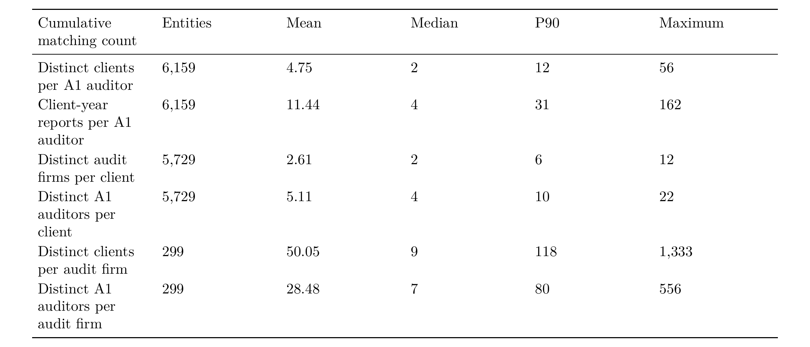
六项分布均呈右偏，均值高于中位数。A1 的累计客户数中位数为 2，报告数中位数为 4，说明应区分客户覆盖与跨年重复签字。客户累计匹配的 A1 数中位数为 4，高于事务所数的中位数 2；这是累计配对数量的描述，不能单凭这两个分布推断年度更换率。
事务所层面的右尾尤其长：累计客户数均值为 50.05、中位数仅为 9；累计 A1 数均值为 28.48、中位数为 7。客户数最大值 1,333 对应 dom_firm_id = 106958（立信），表示其在样本覆盖的 1992—2024 年间累计服务的不同客户，而非单年客户数。主面板中该 ID 对应 7,999 条客户—年度记录，单年客户数最高为 2024 年的 767 家。同一 ID 已在源数据中对应立信不同历史名称，本节沿用该映射。事务所的累计 A1 数也只反映样本报告中出现的 A1 ID，不代表某年的员工规模或完整注册会计师名册。
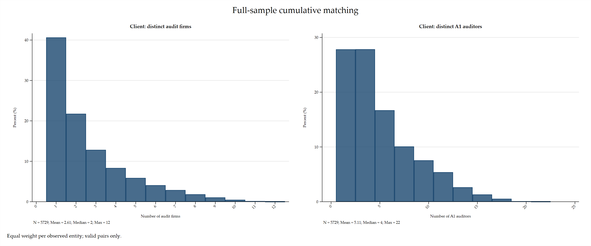
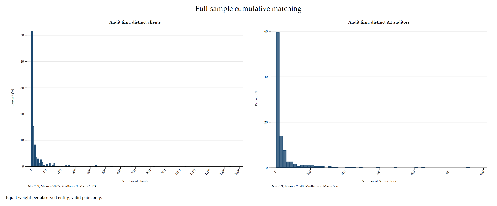
2. 为什么需要超越简单的 AKM 排序
传统 AKM 式两向固定效应把结果写作可加形式：
回归／统计设定。 解释排序与识别的差异，不把样本内 AKM 排序当成外生质量处理。 变量与回归设定。
\[ Y_{ift}=X_{it}'\gamma+\alpha_i+\psi_f+\lambda_t+\varepsilon_{ift}, \]
其中 \(i\) 是客户、\(f\) 是事务所、\(t\) 是年度，\(X_{it}\) 为客户控制变量。若将事务所替换为签字审计师 \(a\)，可估计客户—审计师或事务所—审计师的双边版本。这类模型要求异质性以固定效应的线性可加方式进入；它无法直接刻画“某类客户与某类事务所”的额外配对项。
审计师、事务所之间的流动又相对稀少。有限流动会削弱固定效应和其相关系数的精确度，所以负的或正的 AKM 相关系数本身不能直接被解释为负向或正向排序。当前页面把这种问题作为诊断，而不据此下结论。
Bonhomme、Lamadon 与 Manresa（2019）的分组固定效应框架允许双方不可观测异质性和非线性互补性，并在短面板中使用两步分类估计。原文 并不意味着该框架会自动消除所有有限流动或选择问题；它提供的是一种可检验非加性匹配模式的替代建模路径。AKM 的原始双向固定效应基准见 Abowd、Kramarz 与 Margolis（1999）。
3. 三种排序口径
回归／统计设定。 启发式、PCA、收费 CDF 聚类分别定义主体类型；聚类编号事后用失败率定向，不能独立验证该失败结果。训练时点、完整样本与版本一致性待核验。 变量与回归设定。
3.1 启发式事前排序
当前 44_triadic_sorting_blm.do 的实际实现先把客户的规模、杠杆和 Z-score（若缺失则损失变量）各分为三组；事务所由四大／本土大所／其他所及其滞后失败率分组；CPA 由四大背景、学历（或学位）和其滞后失败率分组。随后对这些分组的标准化值加总，得到客户、事务所和 CPA 的启发式分数。
这与“杠杆、\(-Z\) 分数、过往违规率”构造客户风险分数的思路一致，但当前脚本并没有直接使用 violated_clean 来形成客户分数，也没有把该客户分数简单 xtile 为三组。正式版本若采用后一种定义，应在代码和网页中同步替换，避免文字与实际运行口径不一致。
3.2 PCA 综合分组
12_audit_blm_model.ipynb 另行以客户规模／财务状况／事前风险、事务所梯队与历史风险、CPA 历史风险和可得人力资本变量构建 PCA 分组。它的价值是把多个可观测维度压缩为便于展示的分类；PCA 第一主成分的方向已在 notebook 中按选定风险变量校正。
这仍是描述性降维，不是潜在质量的因果测度。图中的单元格是市场配对份额，不是配对“盈余”或事务所处理效应。
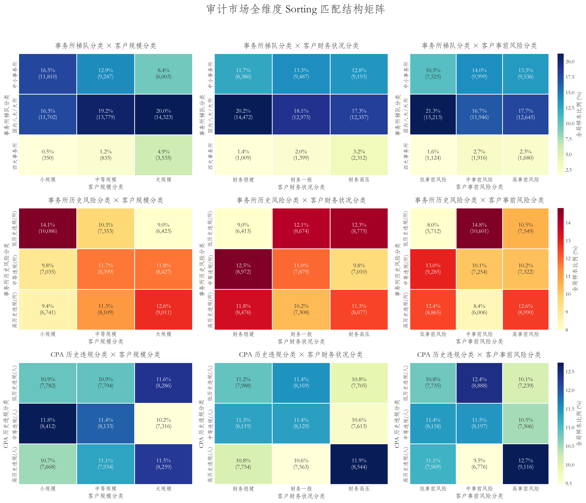
3.3 审计收费 CDF 的 K-means 分组
本项目对 BLM 思路的实施分四步：
- 在正的对数审计费用 \(\ln(AuditFee)\) 上取全市场 20 等分位点，得到 19 个阈值 \(p_q\)；
- 对每个审计业务构造 \(I\{\ln(AuditFee)\le p_q\}\)，并分别按客户、事务所和 A1 CPA 求均值，得到 19 维经验 CDF 向量；
- 对每类主体的向量做 \(K=10\) 的 K-means 聚类；
- 为了方便画图，当前脚本再按各簇的样本内
any_failure_clean均值由低到高给簇编号。这个最后步骤是事后定向，不是无监督聚类的输出。
费用 CDF 保留了平均收费之外的定价分布信息，但它反映的也可能是客户组合、业务复杂度和风险，而不单是审计质量。下图先展示事务所十类的费用 CDF，再展示两类客户配对热图。
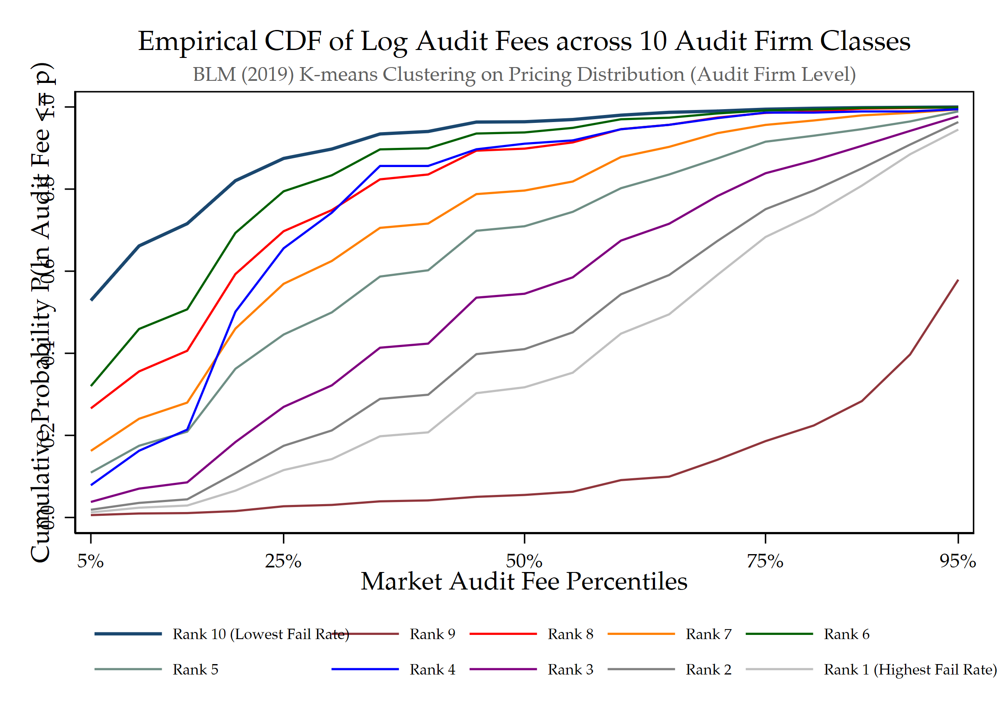
4. 配对单元格：是否存在非加性模式
对客户类型 \(k\)、事务所类型 \(l\) 与 CPA 类型 \(m\)，正式的分组匹配模型希望识别配对项：
回归／统计设定。 热图方程采用配对类型 FE 加年份 FE；当前代码控制 size、roa、lev，公司聚类。旧图有效 N、年份与代码版本待核验，原有“配对×年份”表述已注明核对差异。 变量与回归设定。
\[ Y_{ifat}=X_{it}'\gamma+\lambda_t+\eta_{kl}+u_{ifat},\qquad Y_{ifat}=X_{it}'\gamma+\lambda_t+\eta_{km}+u_{ifat}. \]
\(\eta_{kl}\) 与 \(\eta_{km}\) 是类型配对后的条件均值差异；它们应被读作关联而非结构性匹配剩余。回归分别吸收配对类型和年度固定效应，控制变量为规模、ROA 和杠杆，标准误按客户聚类。下一轮正式运行需要把三方共同模型、分组形成窗口和交叉验证规则固定下来。
启发式口径
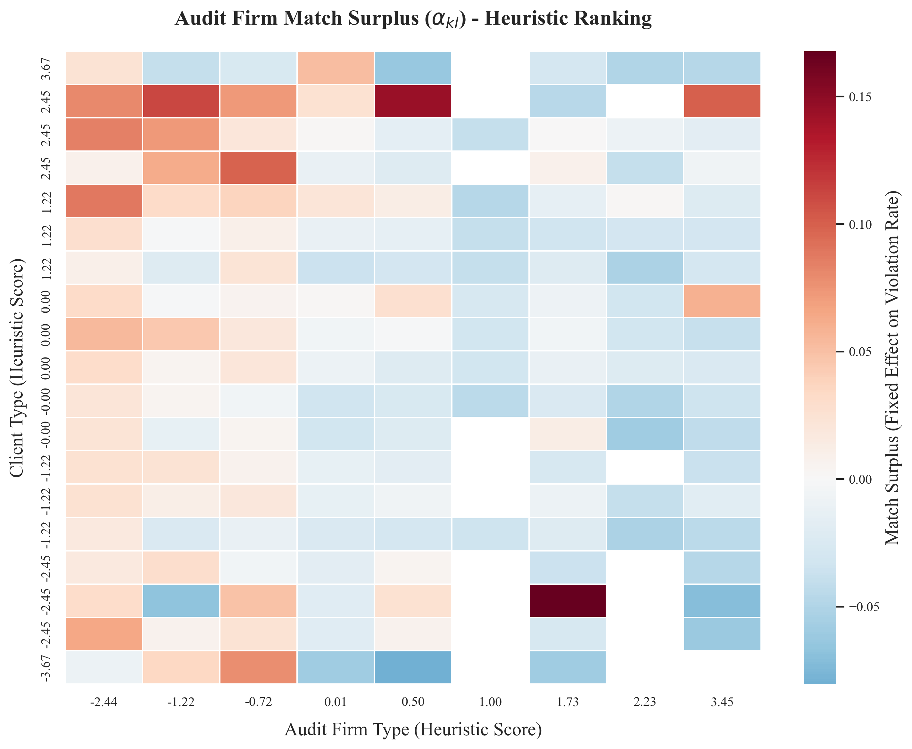
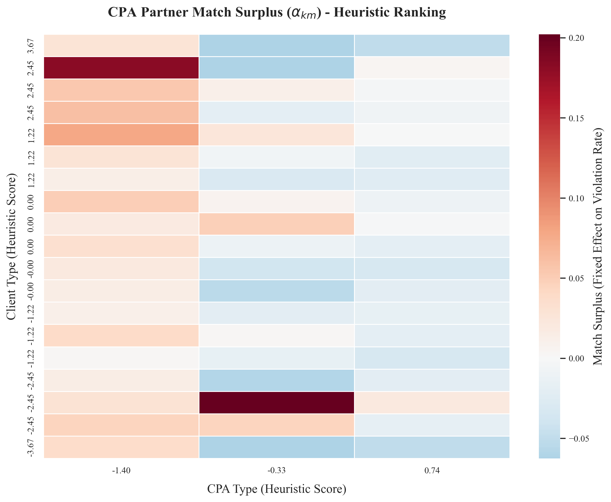
收费 CDF 聚类口径
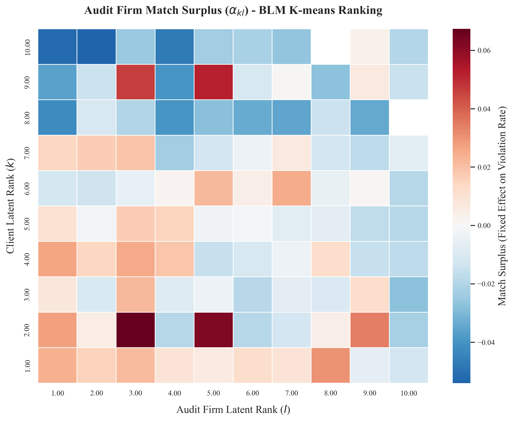
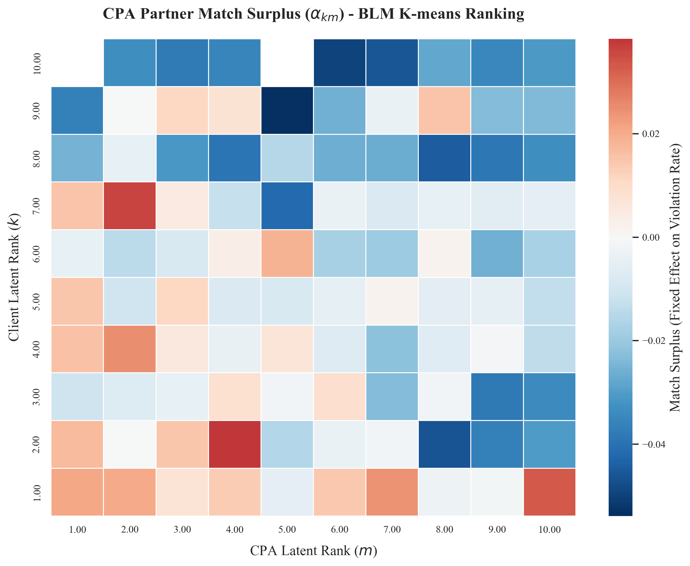
5. 匹配强度的时间变化
回归／统计设定。 五年窗口回归标准化秩分数，无额外控制或 FE，OLS 常规标准误；另列互信息与高风险构成的描述统计，不混称 Spearman 推断。 变量与回归设定。
5.1 五年窗口的秩关联
现有代码在每年先把三种排序转为秩并标准化，再在 \([t-2,t+2]\) 的五年窗口内回归客户秩标准分数对事务所／CPA 秩标准分数。图题将这一系数称为 “Spearman \(\rho\)”，但程序实际保存的是 OLS 斜率及其常规标准误；因此以下图更准确地应读作五年窗口的秩标准分数关联，不是严格按 Spearman 公式计算的相关系数或其置信区间。
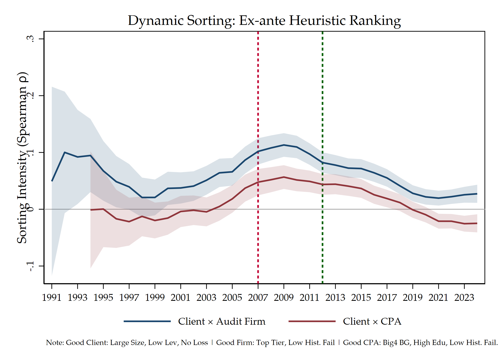
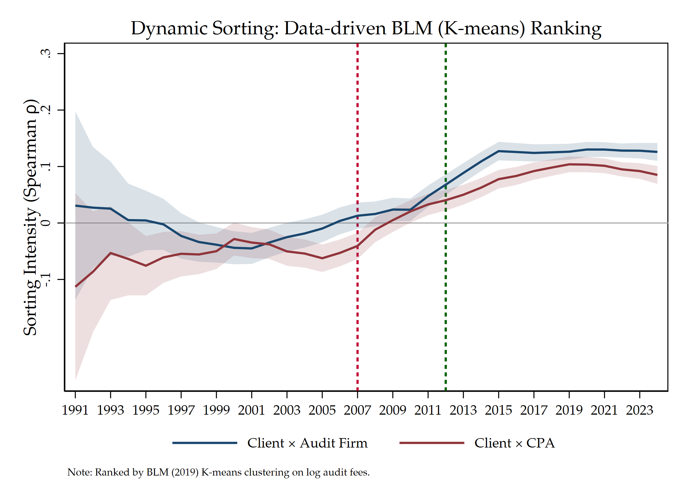
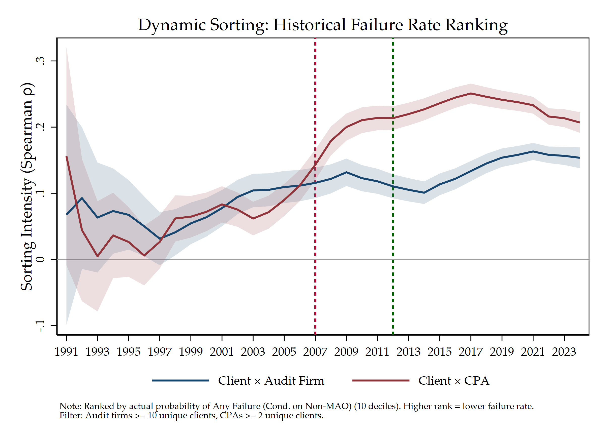
5.2 非线性依赖与高风险客户的事务所构成
互信息指数使用当前启发式客户类型与事务所类型的年度联合分布：
\[ I_t(K;L)=\sum_{k,l}P_t(k,l)\ln\frac{P_t(k,l)}{P_t(k)P_t(l)}. \]
\(I_t=0\) 对应于该两类离散类型在当年独立；数值更高只表示分组的依赖更强，并不区分正向与负向排序，也不比较年份间分组边界变化的影响。
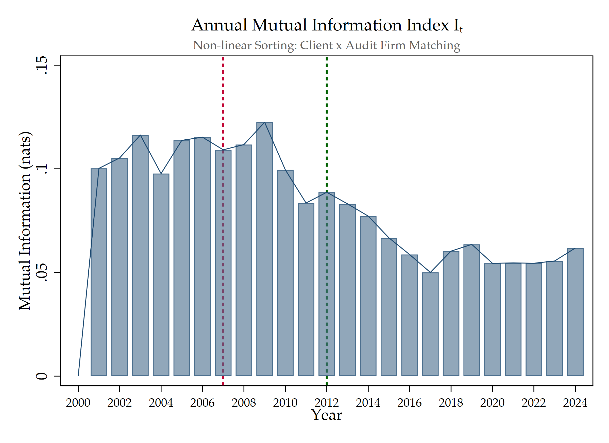
当前“高风险”定义为组合客户类型处于其样本分布上三分之一的观测，而不是仅凭一个连续风险分数。图显示该组所聘本土八大的份额在后期明显上升；四大份额也有波动。这个结构变化与“高风险客户的扩张主要在本土八大”的描述相符，但不能排除客户组成、覆盖范围或事务所分类变化。
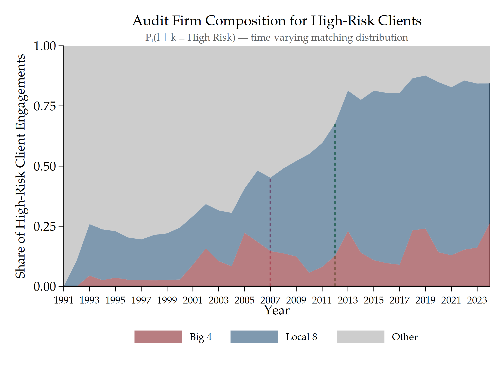
6. 配对稳定性：来自清洗后的机构谱系和签字团队
14_auditor_audit_firm_clean.ipynb 使用清洗后的事务所谱系和签字人身份，比较相邻年保留率。1990—2023 年的 pooled 保留率为：客户—事务所 85.4%，按谱系调整后 88.2%，客户—签字审计师 58.9%，事务所—签字审计师（在下一年仍被观测到时）92.9%。这解释了为什么审计师层面的换所识别尤其依赖少量流动边。
回归／统计设定。 1990—2023 年相邻年配对保留率按主体有效 ID、谱系和签字团队分别计算；不适用回归控制或标准误，不将保留率解释为流动原因。 变量与回归设定。
在完整签字团队的相邻年转换中，39.7% 保持同一团队，38.4% 至少保留一名签字人，11.6% 是同一事务所内两名签字人都更换，10.3% 是全体更换且事务所也更换。这些是描述性流动事实，不代表团队重组的原因。
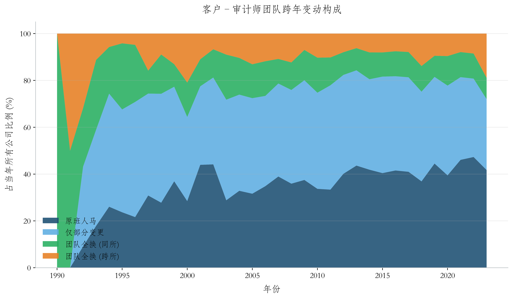
7. 事务所—客户 AKM 的有限流动诊断
42_audit_firm_sorting_akm.do 对客户—事务所网络估计双边固定效应，并按事务所梯队画出可用于估计的客户分布与抽样诊断。下图不是排序的主结果，而是提醒我们：某些梯队的事务所换入／换出边较少，固定效应相关及其符号可能对样本覆盖敏感。
回归／统计设定。 客户—事务所 AKM 的有限流动诊断；与主 AKM 章样本不完全相同。各图有效 N、FE 归一化和抽样次数待源输出核验。 变量与回归设定。

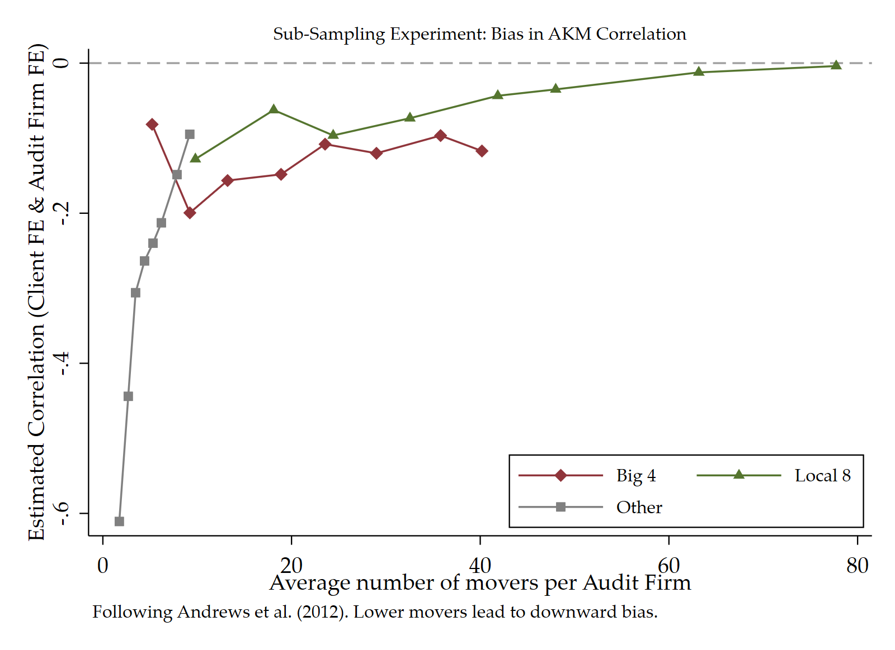
8. 正式主结果前需要锁定的设定
- 将客户风险的变量、方向、形成窗口和三组阈值写入同一份可复现代码；
- 对历史违规率、费用 CDF 与结果变量使用严格的滞后或交叉拟合，避免当前期结果机械进入排序；
- 明确 BLM 的主体、连通样本、最小观察次数和 \(K\) 的选择，并报告替代 \(K\)；
- 以真正的 Spearman 检验或置换／bootstrap 置信区间替换当前滚动 OLS 近似；
- 将三方分组匹配模型与
26_akm.qmd的标准化 ID 和样本门槛对齐，再将其升级为主结果。
回归／统计设定。 待锁定设计清单；未完成的设定不写成已经执行的回归。 变量与回归设定。
参考文献
待解决问题与补充材料
仍需核验。 历史图的代码版本、年份与实际 N；分组形成时点与交叉拟合；配对和年份 FE 与交互 FE 的区分；滚动 OLS 与 Spearman 的差异；三方模型与个人 ID 对齐。
数据、程序与输出记录
估计程序（存档）。 44_triadic_sorting_blm.do · 45_matching_degree_distribution.do · 42_audit_firm_sorting_akm.do
结果来源为 results/tables/selection_matching/matching_degree_distribution/ 下六个 *_counts.csv 文件；三张组合图已按 A1 ID 口径生成并同步到本报告目录。生成脚本为 code/stata/40_selection_matching/45_matching_degree_distribution.do。